赤田大仏、折渡千体地蔵/秋田県由利本荘市
市町村合併により日本全国に聞いた事もない市が次々と誕生する今日この頃、1市7町が合併して出来たという秋田県由利本荘市に行った。
で、かつての本荘市にある長谷寺にある赤田大仏を見てきたよ。
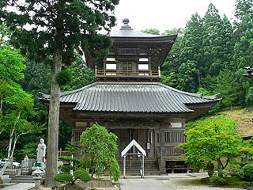
この中に大仏がおわすという。大仏殿は御覧のように重層で、いかにも中で大仏さんが手ぐすねひいて待ってそうな大仏臭プンプンのグッドな建物だ。
大仏舎弟にとっては見過ごす事の出来ないフォルムの建物である。
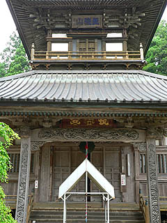 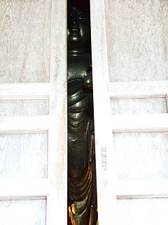
このような建物を見た時に最初に思うのは「2階に登れるか否か」という事である。
これはある意味「大仏がどれぐらい大きいか」よりも重要なテーマで、いいかえれば大仏殿の最大の見どころなのだ。
おっ、扉の隙間からすでに大仏さんが見えてるぞ。早速中に入ってみようじゃないか。
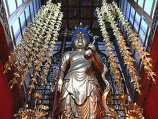
入ると中にはどど〜んと大きな観音様が立っている。
白壁の部分が2階の内壁である。観音様の顔の正面の部分は外から見ると窓が開いているが、そこは塞がれているようだった。
ということは2階自体は存在しないのか〜。えっ、じゃあ２階の手摺は？
日本すきま漫遊記の赤田大仏の記述によると２階の手摺はダミーとされている。確かに手摺の高さが異様に低い。こりゃダメかも。
観音様の高さは約9.8メートル。長谷観音像である。観音なのに大仏とはコレ如何に。
この大仏（というか大観音）は亀田藩時代の名僧、是山泰覚和尚が発願してつくられたものである。
ここでこの大仏の簡単な歴史を。
是山和尚が長谷寺を開山したのが安永4年（1775）、その後安永7（1778）年に丈六阿弥陀仏を建立した。
その後、天明4（1784）年に鎌倉の長谷寺の本尊と同じ木で彫られたという小仏を胎内仏として9メートルもの十一面観音を作り始めた。
完成は天明6（1786）年。その後寛政6（1794）年に七間四方高さ七丈二重屋根の大仏殿が完成も完成し、是山和尚は赤田の名僧としての名声を得、文化8（1811）年に入滅する。享年80才、逆算すると40代半ばからの大仏人生だったという事になる。合掌。
しかしその後、明治21（1888）年にこの十一面観音像は火災のため消失してしまった。明治25（1892）年に再建されたのが現在の赤田大仏なのである。
肝心の大仏殿もその4年後の明治29（1896）年に完成し現在に至る、という訳。
大仏殿が出来上がるまで大仏さんは民家にいたそうな。その時家に入れなくて柱を一本切ったというイイ話も。
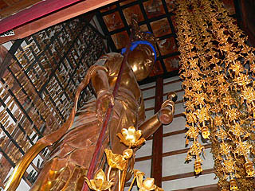 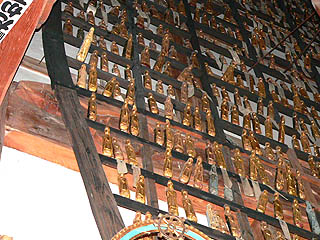
大仏（というか大観音）さんの後ろには光背代わりに小さな金の仏像が掛けられている。恐らく観音像なのだろう。
よく見ると幾つかの仏像には名前の書かれた紙が一緒に貼ってある。つまり大仏殿落慶に際して奉納したものなのだろう。
小さなミニチュア観音を奉納するのは現代の大観音だけじゃあないんですね。
さて、肝心の2階に行けるか否か問題である。
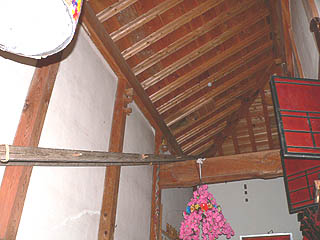 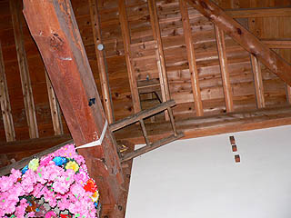
何と大観音の後の壁にハシゴがかかってました。
日本すきま漫遊記のへりおすさんに確認してみたところ当時はハシゴなどなかったとの事、ということは近年取り付けられたという事になる。
ハシゴの先には小さな穴が開いていて屋根裏へ登れるようになっている。
話は変わるが、奈良の東大寺の大仏もこのように天井裏に行ける階段がある。これは大掃除の際に天上から人を吊って掃除をしたり、新年に大仏さんの顔の正面の窓を開けたりする際に天井裏を経由して窓に行くからだ。
ここの場合も、観音像の正面の窓を開けたりするんだろうか。それ以外に天井裏に入るためにわざわざハシゴをかけてある理由がないとは思うのだが・・・
天井裏を経由して2層目の縁側に行けるかというと、それはそれで物凄くアクロバティックな事をしないとそこまでは行けそうもなく、結局2階に行けるのかどうかはよく判りませんでした。
あ、モチロン無断で登っちゃダメですよ。
一方、同じ由利本荘市内をドライブしていると道沿いにノボリがず〜〜〜〜っと並んでいる光景が。
延々延々続くノボリを辿っていくと段々段々山深くなってくる。
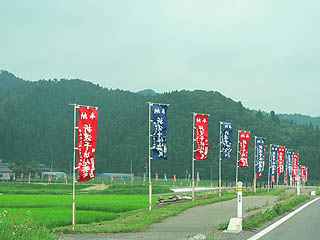 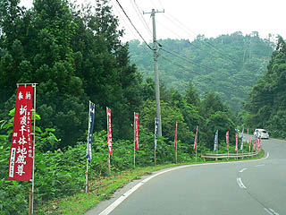
そこは折渡千体地蔵尊。
ここも赤田大仏同様、是山泰覚和尚が開山した霊場である。
折渡峠に六地蔵があったことから安永元（1772）年に是山和尚により延命地蔵尊が建立された。
赤田大仏のある長谷寺の開山よりも前、という事になる。
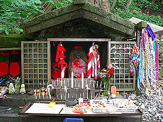 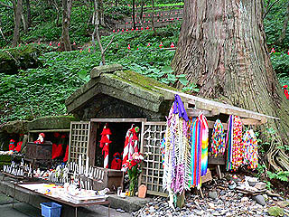
石の祠には六地蔵と延命地蔵尊が納められている。
祠には千羽鶴や人形、菓子、ロウソクなどが奉納されていた。
延命地蔵尊の前には布で作られた棒状の奉納物（コレ、何て言うんでしょう？御存じの方、教えて下さい）が。
で、その背後の斜面には・・・
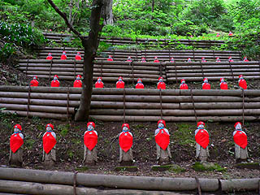
お地蔵さんがズラズラ〜っと並んでました。
赤い前垂れと帽子をあしらったお地蔵さん。鬱蒼とした山の斜面に赤い地蔵が並んでいる光景はまるで彼岸花の花畑のようであった。
というか、こりゃお地蔵さん畑ですな。
平成元年からおよそ２年間で千体の地蔵さんが揃ったという。
2年で1000体。1日あたり2.739726体のハイペースである。1時間で0.1141552体。1秒で・・・（いい加減にしろ！）。
何故、200年以上も前に開かれた霊場に平成の世になって急にお地蔵さんが大量に並べられたのかはナゾだが、それにしても凄い眺めである。
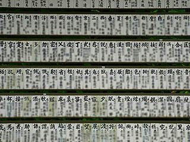 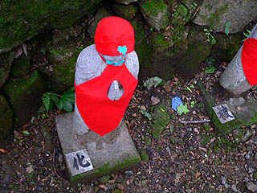
お地蔵さんの奉納者リスト。何故か名前の上に一文字ずつ漢字が冠されている。
で、お地蔵さんの台座を見てみると、やっぱり一文字ずつパネルが貼ってある。
つまり、千体の地蔵全体で一つのお経を奏でている、という事なのだろう。
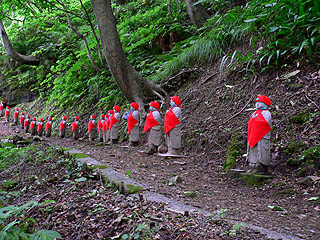 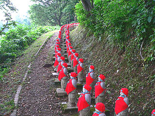
そう考えると、山道沿いにズラ〜っと並ぶお地蔵さんの列にもお経のようなグルーヴ感が出ているような気がしてくるから不思議だ。
この隊列、どこまで続くかしばらく歩いてみたのだが、あまりにも長くて最後まで見られませんでした。
頂上には広島長崎の原爆被災地の遺品と沖縄の霊石を埋め、供養したというお地蔵さんがあるというが、暑くてそこまでたどり着けませんでした。
自分が開いた霊場がこんな凄い事になっていようとは、是山和尚とて草葉の陰で驚いているに違いない。
2005.7.
珍寺大道場 HOME